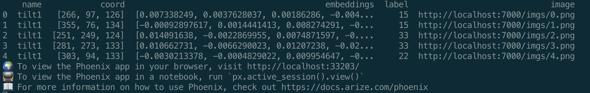

Cellular Content Exploration
Cellular content exploration module¶
For the exploration step, MiLoPYP learns an embedding space for 3D macromolecules such that similar structures are grouped together while dissimilar ones are separated. The embedding space is then projected into 2D and 3D which allows easy identification of the distribution of macromolecular structures across an entire dataset.
Input preparation¶
There are two different mode for this module:
2d3d: Input to this module include aligned 2D tilt series (.mrc, or .ali as in sample_data), corresponding angles (.tlt), 3D reconstructed tomograms from tilt series (.rec).
3d: Input to this module is 3D reconstructed tomograms(.rec) alone.
For 2d3d mode, the training file should be a .txt file with tomogram name, path to 2D tilt series, path to corresponding angles, path to 3D reconstructed tomograms in the following format:
image_name rec_path tilt_path angle_path
tomo1 path_to_rec_1 path_to_tilt_1 path_to_angle_1
tomo2 path_to_rec_2 path_to_tilt_2 path_to_angle_2
...
For example, suppose we store tilt series, corresponding angles, and reconstructed tomograms to the data directory with path: /data, the training txt file will look like this:
image_name rec_path tilt_path angle_path
tomo1 sample_data/tomo1.rec sample_data/tomo1.mrc sample_data/tomo1.tlt
tomo2 sample_data/tomo2.rec sample_data/tomo1.mrc sample_data/tomo1.tlt
...
For 3d mode, the training txt file only need rec_path and tomogram name. tilt_path and angle_path are not needed. Therefore, the file will have the following format:
2d3d mode. Only rec_path will be used.
Warning
Make sure the 2D tilt seires are aligned tilt series. It also needs to be the same x-y dimension as 3D tomogram. Typically we recommend using downsampled tilt series and 3D tomograms (with x-y dimension less than 2000px)
Once files are generated, move all training files to data/ directory (create data/ directory if it doesn't exist)
Training¶
To train exploration module in 2d3d mode (with tilt series and tomograms), run:
python simsiam_main.py simsiam2d3d --num_epochs 300 --exp_id test_sample --bbox 36 --dataset simsiam2d3d --arch simsiam2d3d_18 --lr 1e-3 --train_img_txt sample_train_explore_img.txt --batch_size 256 --val_intervals 20 --save_all --gauss 0.8 --dog 3,5
2d3d mode, training-related files will be saved to exp/simsiam2d3d/test_sample, including log file with loss and all used arguments.
To train exploration module in 3d mode (using tomogram only), run:
python simsiam_main.py simsiam3d --num_epochs 300 --exp_id test_sample --bbox 36 --dataset simsiam3d --arch simsiam2d_18 --lr 1e-3 --train_img_txt sample_train_explore_img.txt --batch_size 256 --val_intervals 20 --save_all --gauss 0.8 --dog 3,5
3d mode, training-related files will be saved to exp/simsiam3d/test_sample, including log file with loss and all used arguments.
| Arguments | Purpose |
|---|---|
num_epochs |
number of training epochs, recommend 100 to 300 |
exp_id |
experiment id you want to save it as. |
bbox |
bounding box size for cropped patches, should bigger than particles |
dataset |
sampling and dataloader mode |
arch |
model backbone architecture |
lr |
learning rate |
training_img_txt |
input txt for training |
batch_size |
batch size for training |
val_intervals |
save model every val_intervals |
save_all |
whether to save all models for each val_interval |
gauss |
preprocessing gaussian filter to denoise tilt series and tomogram |
dog |
kernel sizes for difference of gaussian pyramid, comma delimited |
For more information regarding arguments, go to opts.py
Inference¶
After training, to map tomograms/tilt series into embeddings, use trained model to perform mapping.
For 2d3d mode, run:
python simsiam_test_hm_2d3d.py simsiam2d3d --exp_id test_sample --bbox 36 --dataset simsiam2d3d --arch simsiam2d3d_18 --test_img_txt sample_train_explore_img.txt --load_model exp/simsiam2d3d/test_sample/model_300.pth --gauss 0.8 --dog 3,5
For 3d mode, run:
python simsiam_test_hm_3d.py simsiam3d --exp_id test_sample --bbox 36 --dataset simsiam3d --arch simsiam2d_18 --test_img_txt sample_train_explore_img.txt --load_model exp/simsiam3d/test_sample/model_300.pth --gauss 0.8 --dog 3,5
Note: Please make sure to use same architecture, bounding box size, gauss, and dog argument for both training and inference and select proper trained model
For example, if use --bbox 36 --gauss 0.8 --dog 3,5 in training arguments, make sure the same arguments are used for inference.
To find used arguments for training, go to the output folder and check opts.txt.
For trained model selection, check loss in log.txt and select models with lower loss.
Inference output is a npz file that contains embeddings, corresponding coordinates, original cropped patches from tomogram, names of corresponding tomogram. Output is saved to exp/simsiam2d3d/test_sample/all_output_info.npz for 2d3d mode and exp/simsiam3d/test_sample/all_output_info.npzfor 3d mode.
2D visualization plot¶
{kind=link}
{kind=link}
To generate 2D visualization plot, run:
python plot_2d.py --input exp/simsiam2d3d/test_sample/all_output_info.npz --n_cluster 48 --num_neighbor 40 --mode umap --path exp/simsiam2d3d/test_sample/ --min_dist_vis 1.3e-3
exp/simsiam2d3d/test_sample/2d_visualization_out.png and an additional visualization plot with labels generated using over-clustering algorithm exp/simsiam2d3d/test_sample/2d_visualization_labels.png, in the same directory, additional outputs include all_colors.npy that will be used as input for 3D tomogram visualization plotting and interactive_info_parquet.gzip that includes labels from overclustering and is used as input for interactive session. PNGs of all cropped patches will be also saved to exp/simsiam2d3d/test_sample/imgs/ folder. This will later be used for interactive session. For 3d mode, replace simsiam2d3d with simsiam3d.
| Arguments | Purpose |
|---|---|
input |
output all_output_info.npz from inference |
n_cluster |
number of clusters for overclustering |
num_neighbor |
number of neighbors for both tsne and umap clustering |
mode |
whether to use tsne or umap for dimensionality reduction |
path |
path of directory to save all output and images |
host |
local host for images, default is 7000 |
min_dist_umap |
min distance in UMAP |
min_dist_vis |
min distance for patch display on2d visualization |
3D Tomogram visualization¶
{kind=link}
To generate 3D tomogram visualization plot, run:
python visualize_3dhm.py --input exp/simsiam2d3d/test_sample/all_output_info.npz --color exp/simsiam2d3d/test_sample/all_colors.npy --dir_simsiam exp/simsiam2d3d/test_sample/ --rec_dir sample_data/
*rec3d.npy is the numpy array for 3D tomogram and *hm3d_simsiam.npy is the numpy array for color heatmaps. To generate example visualization plot, two arrays can be
-
loaded using napari as two layers and transparency of each layer can be adjusted in the napari interface
-
blending two arrays by weighted averaging
w x rec_3d.npy + (1-w) x hm3d_simsiam.npyand the resulting array will be the 3D tomogram visualization with color.
| Arguments | Purpose |
|---|---|
input |
output all_output_info.npz from inference |
color |
.npy color array, generated by plot_2d.py |
dir_simsiam |
directory to the current run |
rec_dir |
path to directory with corresponding rec file |
For 3d mode, replace simsiam2d3d with simsiam3d.
3D interactive session¶
Interactive session requires loading of local images (which are already generated by plot_2d.py). Local images are generated by plot_2d.py under directory exp/simsiam2d3d/test_sample/imgs/. To connect images to local host and keep it running in the background, initiate a new screen session in terminal with screen, go to exp/simsiam2d3d/test_sample/ and run python -m http.server 7000. The images will be hosted on 7000. Detach the screen session.
Warning
Make sure to use the same number as the host argument in plot_2d.py, default is 7000.
To initiate interactive session, run:
On terminal, it should show headers of parquet file, including local host address for interactive session. For example, here the local host address ishttp://localhost:33203/

{kind=link}
You should now be able to access the interactive session at http://localhost:33203/.
Warning
If you are running everything on a remote cluster and want to visualize everything through local browser, you will first need to connect remote to local. This needs to be done for both images and the interactive session. To connect images with local host 7000, use ssh -N -f -L localhost:7000:localhost:7000 your_remote_login_address on local terminal. To connect interactive session with local host 33203, use ssh -N -f -L localhost:33203:localhost:33203 your_remote_login_address.
In the interactive session, you should be able to visualize clusters of 3D embeddings, you will be able to adjust the number of points to be displayed in the cluster, coloring of each embedding based on label, select subclusters based on labels, and export selected subclusters.
{kind=link}
{kind=link}
{kind=link}
{kind=link}
Convert exported parquet files to training coordinates file for refinement module¶
Exported coordinates can be downloaded through interactive session. In the example below, the downloaded parquet is named as 2023-10-08_19-44-41.parquet.
{kind=link}
Convert parquet to training coordinates .txt files by running:
python interactive_to_training_coords.py --input path_to_dir_of_parquets --output training_coordinates.txt
| Arguments | Purpose |
|---|---|
input |
full path to directory that contains all downloaded parquet file |
output |
full path to output training coordinates file |
if_double |
whether z coordinates obtained from DoGs in exploration module is downscaled by 2, if so needs to rescale it back |
Now, we can using the same training image file sample_train_explore_img.txt and the generated trainning coordinates file training_coordinates.txt for the subsequent refinement module.